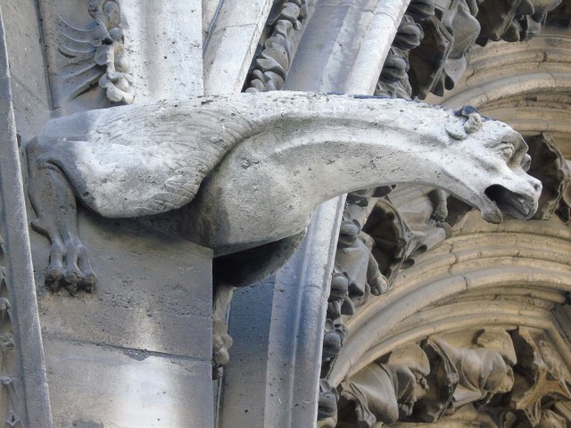
.004_-_Paris.jpg){kind=link}
พ่นน้ำ
การ์กอยล์นอเทรอดาม
นอเทรอดามแห่งปารีส ฝรั่งเศส · ราวปี 1240
รางน้ำที่มีตัว น้ำฝนไหลไปตามร่องบนหลัง แล้วออกทางปาก พ้นกำแพง
สัตว์หินที่พ่นน้ำฝนออกจากหลังคา กับญาติ ๆ ที่ยืนเฝ้าอย่างเดียว วาดด้วยคณิต ใต้ท้องฟ้าปารีสตอนนี้
แตะการ์กอยล์ แตะฟ้าให้ฝนตก
การ์กอยล์คือรางน้ำ น้ำเข้าจากหลังคาแล้วออกทางปาก สัตว์แกะสลักที่ไม่ได้นำน้ำ เรียกว่า กรอเทสก์ (ตัวประหลาด) หรือที่นอเทรอดามเรียกว่า คิเมียร่า ดู เดา แล้วเฉลย
รางน้ำที่แกะเป็นรูปสัตว์ มีร่องหรือท่อผ่านตัว น้ำออกทางปาก
รูปแกะแปลก ๆ ทั้งคนและสัตว์ที่ไม่ได้นำน้ำ คำนี้มาจากคำอิตาลี grotta แปลว่าถ้ำ
ชื่อเรียกตัวประหลาดบนระเบียงชั้นบนของนอเทรอดาม ตั้งตามสัตว์ประหลาดหลายร่างในตำนานกรีก
ผู้เฝ้าประตูและสันหลังคาที่อื่น: ยักษ์และสิงห์ของไทย สัตว์บนสันหลังคาจีน กระเบื้องหน้ายักษ์ญี่ปุ่น หน้ากาล
น้ำที่ไหลลงตามกำแพงจะชะปูนระหว่างก้อนหินออกไป การ์กอยล์ยื่นออกมาให้น้ำตกลงไปไกลกำแพง ลองทำรางให้ยาวหรือสั้น ให้ฝนตกหนักขึ้น แล้วดูว่าน้ำตกที่ไหน
Q = rain × 40 m²หลังคารับฝนที่ตกบนพื้นที่ 40 ตารางเมตร แล้วส่งลงรางเดียว
v = √(g·d), d = (q²/g)^⅓น้ำที่ไหลออกจากปลายรางเปิดจะไหลที่ความลึกวิกฤต d ในที่นี้ q คือปริมาณน้ำต่อความกว้างหนึ่งเมตรของร่องกว้าง 12 ซม.
x = v × √(2h/g)จากความสูง 10 เมตร น้ำตกนานราว 1.4 วินาที ระหว่างนั้นลอยออกไปอีก x เมตร
แม้ฝนตกหนัก น้ำก็ออกจากปากรางช้า ไม่ถึงเมตรต่อวินาที แล้วตกลงเกือบตรงดิ่ง ความยาวของรางจึงทำงานเกือบทั้งหมด การ์กอยล์ยุคกลางจึงยาว ช่างยังใช้หลายตัวด้วย วียอเลอดุกเขียนว่าการแบ่งน้ำจากหลังคาออกเป็นหลายสาย ทำให้แต่ละสายเหลือแค่เส้นบาง ๆ ที่ทำร้ายกำแพงไม่ได้ การ์กอยล์ตัวแรก ๆ ปรากฏราวปี 1220 ที่เมืองลาออง ปารีสใช้ทั่วไปราวปี 1240 ปี 1724 กฎหมายอาคารของลอนดอนกำหนดให้บ้านใหม่ใช้ท่อน้ำฝน
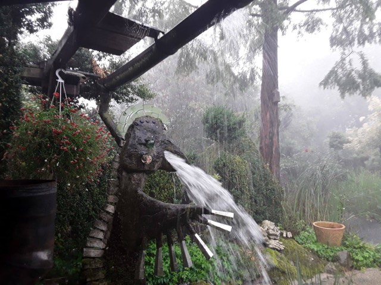
น้ำฝนไหลลงตามรางบนครีบค้ำยัน ไปตามร่องบนหลังการ์กอยล์ แล้วพุ่งออกทางปาก ให้ไกลจากกำแพงที่สุด
เมืองรูอ็องในแคว้นนอร์มังดีเล่าว่าการ์กอยล์ตัวแรกมาจากไหน กดดูเรื่องทีละตอน
โรมานุสเป็นบิชอปแห่งรูอ็องในทศวรรษ 630 แต่มังกรเพิ่งปรากฏในบันทึกปี 1394 ตั้งแต่ราวศตวรรษที่ 12 จนถึงปี 1790 คณะนักบวชแห่งรูอ็องปล่อยนักโทษประหารหนึ่งคนทุกวันเสด็จขึ้นสวรรค์ เรียกว่า สิทธิพิเศษของนักบุญโรแม็ง เพื่อระลึกถึงชายที่ไปกับเขา
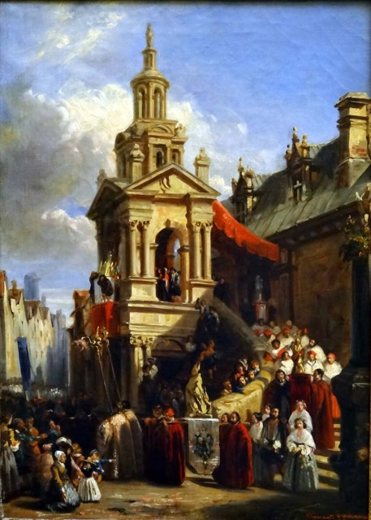
ที่ไหนที่ผู้คนสร้างหลังคาที่ต้องระบายน้ำฝน หรือประตูที่ต้องมีผู้เฝ้า สัตว์แกะสลักก็ย้ายเข้าไปอยู่ หมุดบอกว่าตอนนี้ฝนตกอยู่ที่ไหน แตะหมุด แล้วแตะรูปไหนก็ได้
แตะหมุด

นอเทรอดามแห่งปารีส ฝรั่งเศส · ราวปี 1240
รางน้ำที่มีตัว น้ำฝนไหลไปตามร่องบนหลัง แล้วออกทางปาก พ้นกำแพง
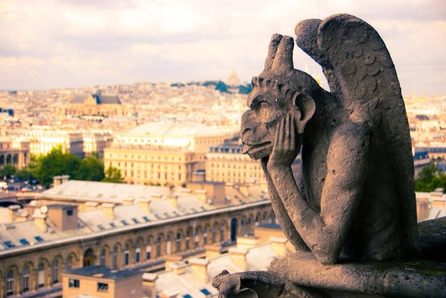
ระเบียงคิเมียร่า นอเทรอดาม · ทศวรรษ 1850
คิเมียร่า ไม่ใช่การ์กอยล์ เพราะไม่ได้นำน้ำ วียอเลอดุกออกแบบไว้ตอนบูรณะในศตวรรษที่ 19
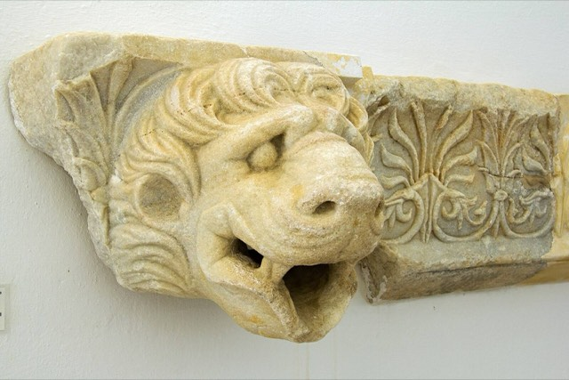
วิหารซูส โอลิมเปีย กรีซ · ราว 470–456 ปีก่อน ค.ศ.
หัวสิงโต 102 หัวเรียงตามรางหินอ่อนบนขอบหลังคาที่เรียกว่า ซิมา เหลืออยู่ 39 หัว วิทรูเวียสบอกว่าเจาะรูเฉพาะหัวที่อยู่เหนือเสา
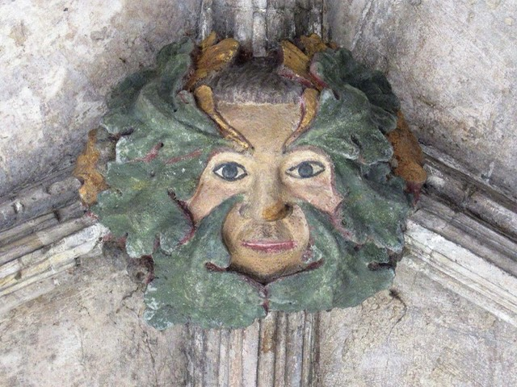
หลังคาและหัวเสาโบสถ์ทั่วยุโรป
หน้าที่ทำจากใบไม้ มีเถาไม้งอกออกจากปาก เข้ามาอังกฤษจากฝรั่งเศสในศตวรรษที่ 12 ส่วนชื่อ กรีนแมน เพิ่งตั้งในปี 1939
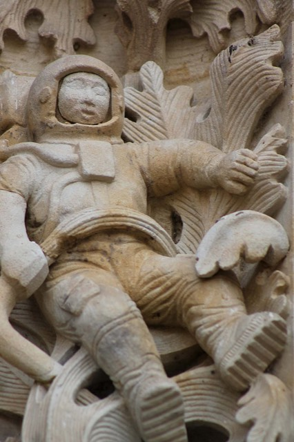
มหาวิหารใหม่ ซาลามังกา สเปน · 1992
ช่างหิน มิเกล โรเมโร แกะไว้ในปี 1992 ตอนบูรณะประตูด้านเหนือ ซ่อนอยู่ในลายใบไม้เก่า
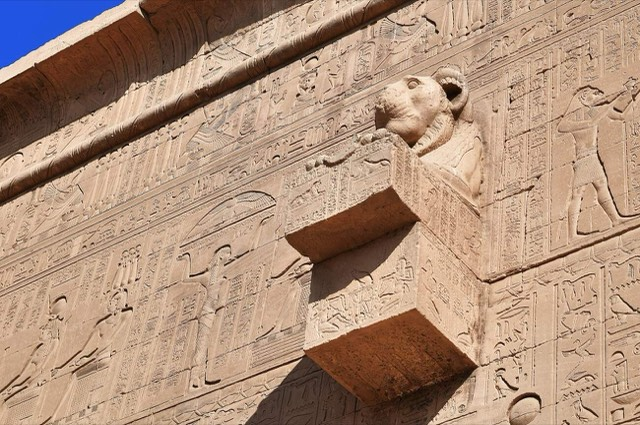
วิหารฮาธอร์ เดนเดรา อียิปต์
อียิปต์ตอนบนฝนตกน้อย แต่หลังคาวิหารที่เดนเดราและเอ็ดฟูก็ยังระบายน้ำฝนออกทางปากสิงโต
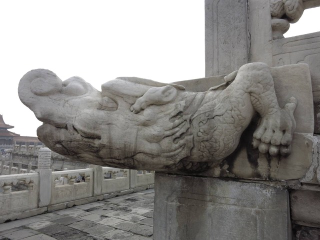
พระราชวังต้องห้าม ปักกิ่ง · ศตวรรษที่ 15
หัวมังกรไร้เขาใต้เสาราวหินอ่อนทุกต้น ปากเจาะเป็นรู
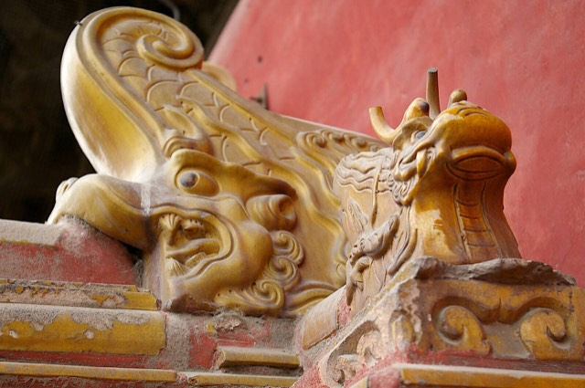
หลังคาพระราชวังและวัด จีน
มันงับปลายสันหลังคา เป็นเครื่องรางกันไฟ ตัวบนพระที่นั่งไท่เหอสูง 3.4 เมตร หนักราว 4.3 ตัน ตำนานเล่าว่าดาบที่ปักหลังตรึงมันไว้ไม่ให้หนี
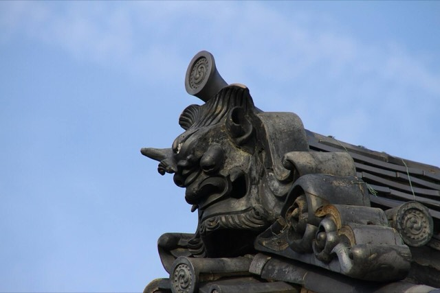
หลังคาวัดและปราสาท ญี่ปุ่น
หน้ายักษ์บนกระเบื้องปลายสันหลังคา กันเคราะห์ร้ายไม่ให้ขึ้นหลังคา
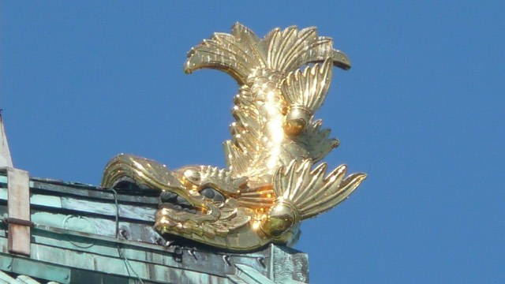
ปราสาทนาโงยะ ญี่ปุ่น
หัวเสือบนตัวปลาคาร์ป หางชี้ฟ้า เชื่อกันว่ากลืนน้ำได้มหาศาลและควบคุมฝน จึงเป็นเครื่องรางกันไฟ
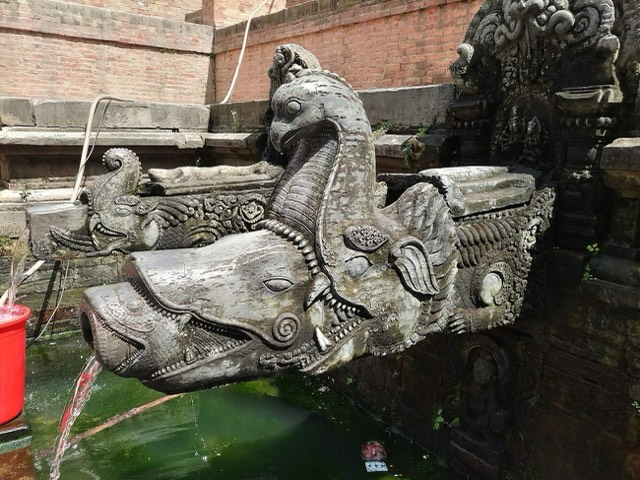
มังคะหิติ ปาฏัน เนปาล
ก๊อกหินที่ก้นลานลึก มีน้ำจากเนินเขาไหลออกมา
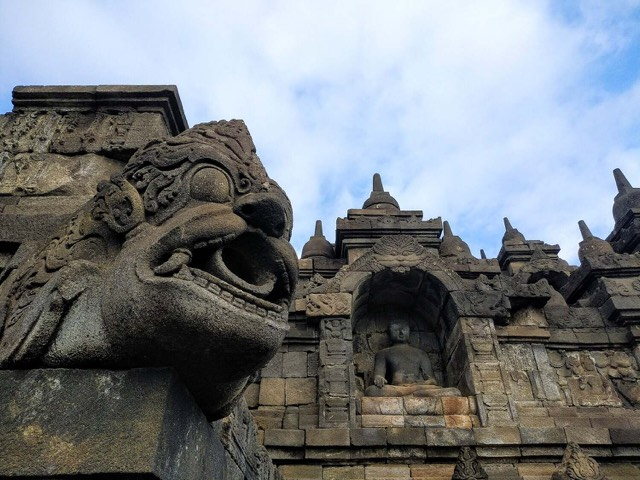
บุโรพุทโธ ชวา อินโดนีเซีย · ศตวรรษที่ 9
ปากน้ำ 100 ปากที่มุมลานแต่ละชั้น แต่ละปากเป็นยักษ์หรือมกร ระบายฝนเมืองร้อนออกไป
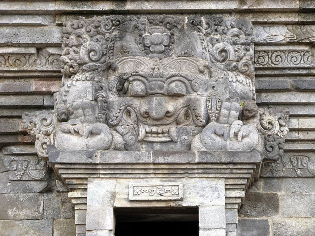
เหนือประตูเทวาลัย อินเดีย
หน้าที่กินตัวเอง เฝ้าประตูโดยไม่มีตัวและไม่มีขากรรไกรล่าง
ทับหลังขอม กัมพูชาและไทย
หน้าเดียวกันในหินทรายขอม ถือพวงมาลัยที่ไหลออกจากปาก
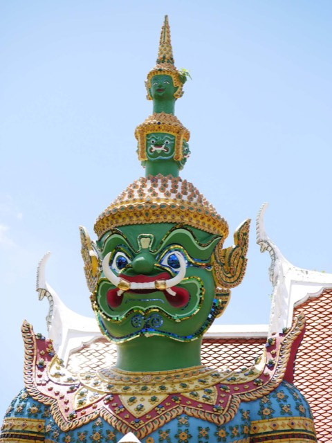
วัดอรุณฯ และวัดพระแก้ว กรุงเทพฯ
ยักษ์สิบสองตนจากรามเกียรติ์ สูงตนละราว 5 เมตร เฝ้าประตูวัดพระแก้ว ที่วัดอรุณฯ ทศกัณฐ์ตัวเขียวกับสหัสเดชะตัวขาวเฝ้าพระอุโบสถ
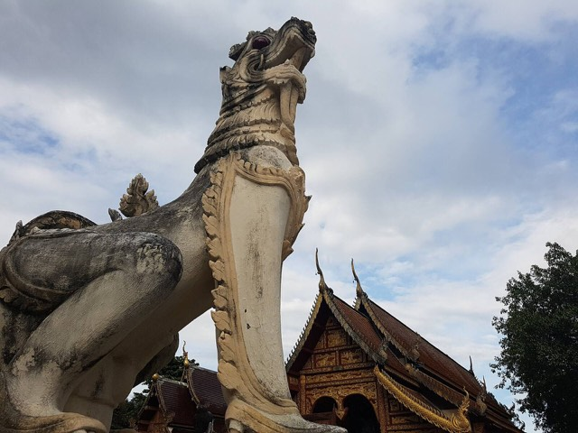
ประตูวัด เชียงใหม่
สิงห์คู่หน้าประตูและบันไดวัด ขาวและทอง อ้าปาก แบบนี้เข้ามาล้านนาผ่านทางพม่า
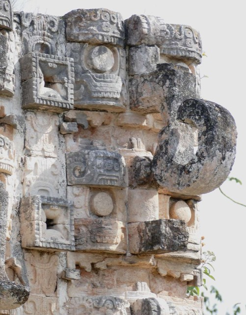
โคดซ์ป็อป กาบาห์ เม็กซิโก
เทพแห่งฝนของมายา ซ้ำหลายร้อยหน้าบนผนังเดียว จมูกยาวม้วนขึ้น เนินเขาปูกไม่มีบ่อน้ำธรรมชาติ ฝนคือน้ำเพียงแหล่งเดียว
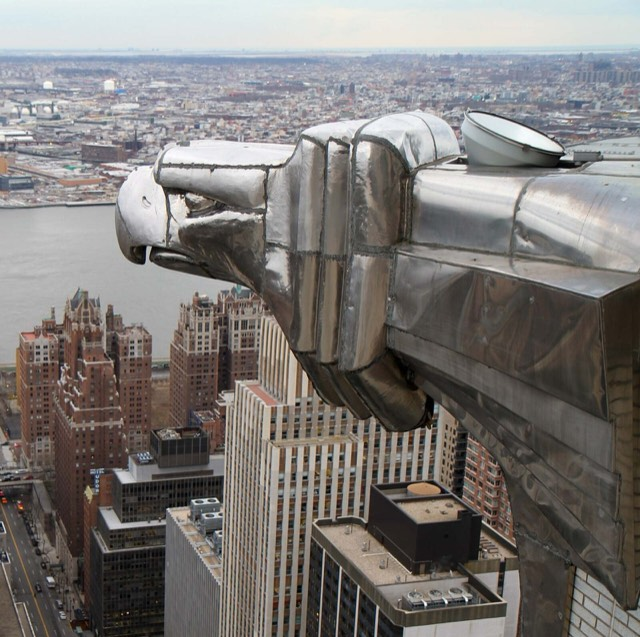
ตึกไครสเลอร์ นิวยอร์ก · 1930
หัวนกอินทรีเหล็กที่มุมชั้น 61 คนเรียกว่าการ์กอยล์ แต่ไม่ได้นำน้ำ
หัวมังกรชือหินอ่อนใต้ฐานพระที่นั่งไท่เหอ
ท้องพระโรงใหญ่สามหลังของพระราชวังต้องห้ามตั้งอยู่บนฐานหินอ่อนขาวสามชั้น สูง 8.13 เมตร ใต้ราวหินมีหัวมังกรที่ปากเจาะเป็นรู 1,142 หัว ตามที่พิพิธภัณฑ์พระราชวังนับไว้ เมื่อพายุหนัก ทุกหัวพ่นน้ำพร้อมกัน
ฝนตกบนฐาน มังกรกำลังพ่นน้ำ
ชาวปักกิ่งเรียกภาพนี้ว่า 千龙吐水 (เชียนหลงถู่สุ่ย) มังกรพันตัวพ่นน้ำ แต่ละหัวคือ ชือ มังกรไร้เขา หนึ่งในโอรสเก้าองค์ของมังกร เชื่อว่าท้องของมันจุน้ำได้มหาศาล ลานลาดออกด้านนอกเล็กน้อยให้น้ำฝนไหลไปหาปาก ส่วนที่หอฟ้าเทียนถาน ฐานสามชั้นมีหัวพ่นน้ำชั้นละ 99 หัว ชั้นล่างเป็นเมฆ ชั้นกลางเป็นหงส์ ชั้นบนเป็นมังกร
ตำนานฮินดูที่ไฮน์ริช ซิมเมอร์เล่าไว้: อสูรราหูมาเรียกร้องสิ่งหนึ่งจากพระศิวะ พระศิวะเปิดพระเนตรที่สาม สัตว์หัวสิงห์ตัวหนึ่งกระโจนออกมาด้วยความหิว ราหูขอชีวิตและได้รับการไว้ชีวิต สัตว์ตัวนั้นจึงไม่มีอะไรกิน พระศิวะบอกให้มันกินตัวเอง มันกินจากหางขึ้นมาจนเหลือแต่หน้า พระศิวะตั้งชื่อให้ว่า กีรติมุข แปลว่าหน้าแห่งเกียรติ แล้วให้อยู่เหนือประตูเทวาลัย
หน้าเดียวกันนี้เดินทางไปทางตะวันออกกับช่างฮินดูและพุทธ บนทับหลังขอมคือ กาล เวลาที่กลืนกินทุกสิ่ง ขากรรไกรบนใหญ่ ไม่มีขากรรไกรล่าง มีพวงมาลัยและเถาไม้ไหลออกจากปาก ภาษาไทยเรียกว่า หน้ากาล ผู้กลืนทุกอย่าง แม้กระทั่งตัวเอง ที่ชวา หัวกาละถลึงตาโปนและเขี้ยวโค้งอยู่เหนือประตูวิหาร
สร้างปี 570 ผู้คนยังมาดื่ม ล้าง และรองน้ำใส่หม้อ
ในหุบเขากาฐมาณฑุ ก๊อกหินแกะสลักที่เรียกว่า หิติ (ภาษาเนวาร์) หรือ ดุงเก ดารา (ภาษาเนปาล แปลว่าก๊อกหิน) อยู่ก้นบ่อขั้นบันได รับน้ำจากใต้ดิน มังคะหิติในเมืองปาฏัน สร้างปี 570 ยังมีน้ำไหล และใช้เป็นน้ำศักดิ์สิทธิ์ของวัดกฤษณะทุกวัน กดค้างไว้เพื่อรองน้ำใส่หม้อ
กดค้างที่ภาพ
ก๊อกส่วนใหญ่เป็นมกร ปากจระเข้ งวงช้าง เขี้ยวและหูหมูป่า หางนกยูง ลำตัวเป็นรางเปิด การสำรวจปี 2019 พบว่าก๊อกที่มีบันทึกในหุบเขายังมีน้ำไหล 224 แห่ง การ์กอยล์ในยุโรปพ่นน้ำออกให้ห่างจากอาคาร แต่หิตินำน้ำมาให้คน
การ์กอยล์ทุกตัวเคยเป็นก้อนหินมาก่อน เลือกหนึ่งตัวแล้วสกัดออกมา เปิดเสียงเพื่อฟังเสียงสิ่ว
ที่มหาวิหารกลอสเตอร์ ช่างหินใหญ่ปั้นรูปด้วยดินเหนียวขนาดเท่าจริงก่อน แล้วช่างคนอื่นถ่ายแบบลงหินด้วยเครื่องวัดจุด จากนั้นใช้สายตา ร่องน้ำสกัดไปตามหลังให้น้ำออกทางปาก การ์กอยล์ใหม่สิบสองตัวของเพสลีย์แอบบีย์ใช้เวลาตัวละราวสี่สัปดาห์ ส่วนตัวประหลาดตัวหนึ่งที่มหาวิหารยอร์กใช้สิบสี่สัปดาห์
ปี 1992 ประตูปูเอร์ตาเดรามอสของมหาวิหารใหม่ซาลามังกาได้รับการบูรณะเพื่องานนิทรรศการลาสเอดาเดสเดลอมเบรในปีถัดมา ช่างหิน มิเกล โรเมโร แกะของจากยุคของเขาไว้ในงานเก่า: นักบินอวกาศ และใกล้ ๆ กันคือมังกรยิ้มถือไอศกรีมสามลูก หาให้เจอทั้งสองตัว
แตะรูปแกะที่คิดว่าใช่
เท้าคางมองปารีสมาตั้งแต่ทศวรรษ 1850 ไม่ได้นำน้ำ จึงเป็นคิเมียร่า ไม่ใช่การ์กอยล์
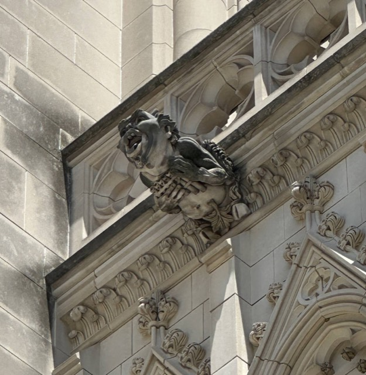
APK · CC BY 4.0วอชิงตัน 1984–1986มหาวิหารแห่งชาติวอชิงตันชวนเด็ก ๆ ผ่านนิตยสาร National Geographic World ให้ออกแบบตัวประหลาด มีผู้ส่งราว 1,400 คนจาก 16 ประเทศ คริสโตเฟอร์ เรเดอร์ อายุ 13 ปี วาดดาร์ธ เวเดอร์ และเป็นหนึ่งในสามรองชนะเลิศ เจย์ ฮอลล์ คาร์เพนเตอร์ ปั้นแบบดินเหนียว แพทริก เจ. พลังเก็ต แกะไว้สูงบนหอด้านตะวันตกเฉียงเหนือ ต้องใช้กล้องส่องทางไกลจึงจะเห็น
รางวัลใหญ่ตกเป็นของแอลิสัน การ์เนอร์ อายุ 12 ปี กับรูปชายฟันเยินถือร่ม เธออ่านมาว่าน้ำฝนไหลออกจากปากการ์กอยล์ จึงให้ตัวประหลาดของเธอถือร่มไว้กันน้ำ
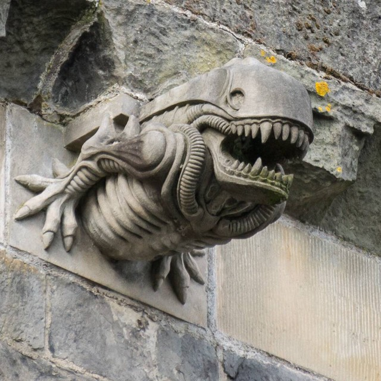
Colin · CC BY-SA 3.0เพสลีย์ ทศวรรษ 1990เดวิด ลินด์เซย์ แกะการ์กอยล์ใหม่สิบสองตัวให้หลังคาแอบบีย์ ตัวละราวสี่สัปดาห์ ทุกตัวมีร่องน้ำ และได้แรงบันดาลใจจากวัฒนธรรมศตวรรษที่ 20 ตัวหนึ่งหน้าเหมือนสัตว์ประหลาดในภาพยนตร์เรื่องเอเลียน ภาพถ่ายของมันแพร่ไปทั่วโลกในปี 2013
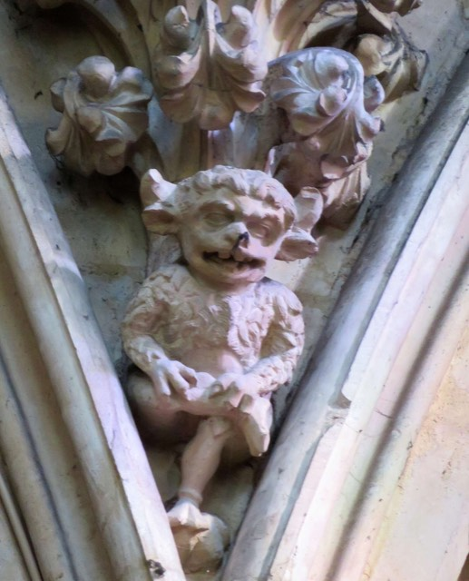
Gordon Hatton · CC BY-SA 2.0ลินคอล์น 1250–1280ตัวประหลาดตัวเล็กนั่งอยู่สูงในคณะนักร้องเทวดาของมหาวิหารลินคอล์น ตำนานที่แต่งเป็นกลอนในปี 1897 เล่าว่า ปีศาจกับสายลมมาที่มหาวิหาร ปีศาจเข้าไปคุยกับคณบดี ส่วนสายลมยังรออยู่ข้างนอกมาจนทุกวันนี้
อาร์ชบิชอปเดอโนอายส์ให้แก้หลังคาและติดรางตะกั่ว การ์กอยล์ยุคกลางส่วนใหญ่จึงถูกถอดลง ตัวที่เห็นทุกวันนี้ส่วนมากมาจากการบูรณะในศตวรรษที่ 19
วียอเลอดุกออกแบบคิเมียร่าบนระเบียงชั้นบนด้วยตัวเอง แล้วทีมช่างแกะ ซึ่งมีวิกตอร์ ปียาเนต์ เป็นหัวหน้า แกะออกมา พวกมันเป็นงานฟื้นฟูกอทิก ไม่ใช่ของยุคกลาง
มาร์กาเร็ต เบิร์ก-ไวต์ ถ่ายภาพตึกไครสเลอร์จากนั่งร้าน และติดใจหัวนกอินทรีเหล็ก ของประดับบนตึกทำจากนิโรสตา เหล็กกล้าไร้สนิม 18-8 ซึ่งใช้ในอาคารอเมริกันเป็นครั้งแรก
พระบาทสมเด็จพระจุลจอมเกล้าเจ้าอยู่หัวทรงนำประติมากรรมจากบุโรพุทโธกลับมาแปดเกวียน โดยได้รับความยินยอมจากรัฐบาลอาณานิคม ในนั้นมีสิงห์สองตัว หน้ากาล ทวารบาล และปากน้ำหนึ่งชิ้น บางชิ้นจัดแสดงอยู่ในกรุงเทพฯ
การสำรวจวันที่ 6 มกราคม 1937 พบว่าเกล็ดทอง 58 จาก 110 เกล็ดหายไปจากชาจิโฮโกะตัวผู้ ตัวดั้งเดิมไหม้ในการโจมตีทางอากาศวันที่ 14 พฤษภาคม 1945 คู่ที่อยู่บนหอปราสาทตอนนี้ขึ้นไปตั้งเมื่อสร้างหอใหม่ในปี 1959 ตัวผู้สูง 2.62 เมตร มีทอง 44.69 กิโลกรัม
การ์กอยล์ใช้งานได้หกตัวใหม่ของมหาวิหารกลอสเตอร์ เป็นนักรักบี้ จ็อกกี้ นักเรียกร้องสิทธิสตรี คนงานเหมือง คนตัดขนแกะ และนักกลิ้งชีส
ปี 1240 หอคอยแห่งลอนดอนใช้ท่อตะกั่วระบายน้ำฝนแล้ว เพื่อไม่ให้น้ำกระเซ็นใส่กำแพงที่ทาปูนขาว
ภาษาส่วนใหญ่ตั้งชื่อตามน้ำ ภาษาอังกฤษกับฝรั่งเศสตั้งตามลำคอ
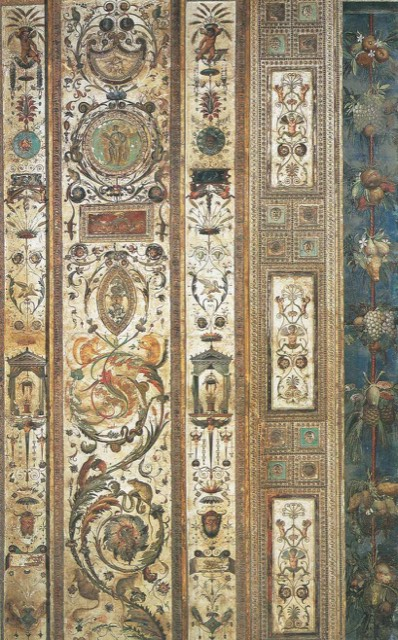
ข้อความและภาพวาด CC BY 4.0 ให้เครดิต NaNoBotCo โค้ด MIT ภาพถ่ายใช้สัญญาอนุญาตตามที่ระบุไว้กับแต่ละภาพ
.jpg){kind=link}


.jpg){kind=link}


_(51111692707).jpg){kind=link}

.jpg){kind=link}
.jpg){kind=link}
.jpg){kind=link}